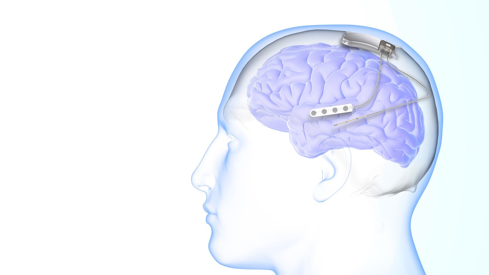

Thesis: Behavioural and Intracranial Study
Determining the mechanisms of temporal context recovery in autobiographical memory
Data collection · October 2026
Retrieved-context theories predict that recalling a memory reinstates its original context, biasing recall toward temporally nearby events — but this has only been tested in controlled lab settings. This project tests these predictions in real-world autobiographical memory using HippoCamera, first in healthy adults, then in epilepsy patients implanted with the NeuroPace RNS system to probe the underlying neural mechanisms.